A forex trading concept by B-Jeff. All charts are drawn examples, not real market data.
1. The SORK framework at a glance
SORK is a forex trading concept built on four pillars. Each pillar answers one question, and each is read on its own timeframe. Work through them in order: the trend first, then the points of interest, then the confirmation, and finally the key level where the trade is entered.
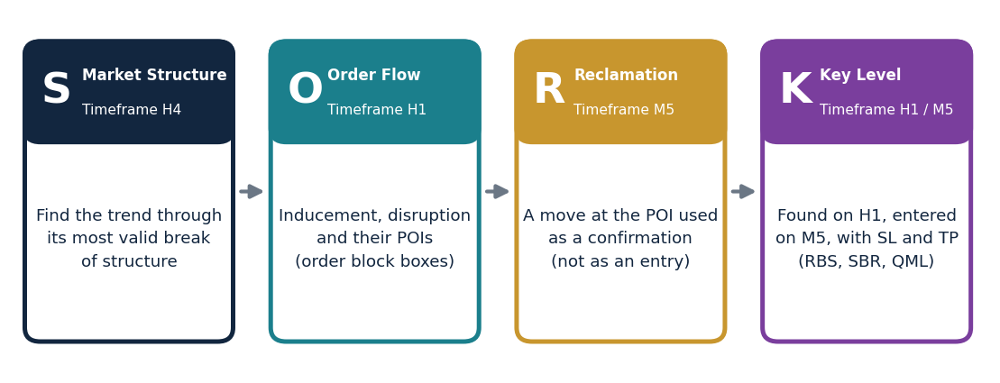
Figure 1. The four pillars of SORK, the timeframe each one is read on, and what each one does.
Pillar
Timeframe
Question it answers
What it gives you
S: Market Structure
H4
Which way is the market going?
A valid trend, found through its most valid break of structure
O: Order Flow
H1
Where are the points of interest?
Inducement and disruption, drawn as POI boxes on their order blocks
R: Reclamation
H1
Is price confirming at the POI?
A confirmation (never an entry on its own)
K: Key Level
H1 to find, M5 to enter
Where do I enter, and where do I get out?
Entry, stop loss, take profit, and the QML for reversals
Timeframe cheat sheet
What you are doing
Timeframe
Finding the trend direction (market structure)
H4 only. H1 is not used to find the trend direction.
Marking inducement, disruption and their POIs; judging if they are invalidated
H1
Finding a key level and judging whether it is valid
H1
Checking for a QML (and its confirmation)
H1. The entry is on M5.
Reclamation at the inducement and disruption POIs, and judging whether a reclamation is invalid
H1
Entry confirmations (move out of the POI, engulf, harami)
M5, inside the POI box
Invalidating a key level (a body closing outside its POI)
M5
Bjeff zone
An M5 key level inside the 50% of an H1 key level
SMarket StructureTimeframe: H4
Market structure tells you the direction of the market, which is also called the market bias. The trend direction comes from H4 only. The trend is identified through the most valid break of structure (BOS) on H4. That H4 trend is then used to set the inducement and disruption on H1; H1 is used for order flow, not for trend direction. A BOS is the same on every timeframe.
Reading the trend
Uptrend: the market creates higher highs (HH) and higher lows (HL).
Downtrend: the market creates lower lows (LL) and lower highs (LH).
Making a trend valid
A trend is only valid when it has both liquidity and a break of structure.
Liquidity (LQ): an opposite-colored candle within the trend. In an uptrend bullish green candles dominate, so the LQ is a bearish red candle. In a downtrend the LQ is a bullish candle.
Break of structure (BOS): a new HH in an uptrend, or a new LL in a downtrend.
Structural liquidity (SLQ): liquidity that sits within a valid market structure.
Rule: Market structure is valid when the LQ and the BOS are both present. Otherwise it is not valid. The most valid BOS is the one that meets these rules.
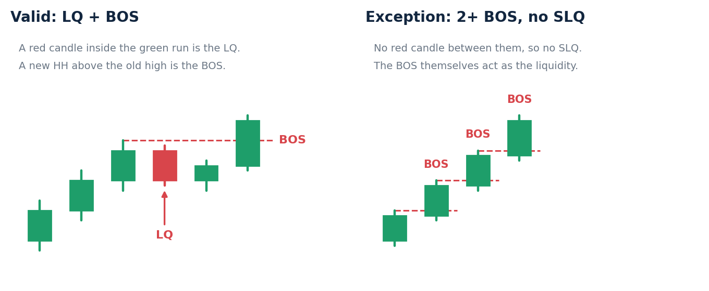
Figure 2. Left: a valid structure has an LQ (the red candle) and a BOS above the old high. Right: the exception, where two or more BOS form with no SLQ between them.
Exception: BOS without SLQ
If there is a BOS but no SLQ, and two or more BOS have formed without SLQ, those BOS can be treated as the liquidity. How close together they are does not matter. This second type of BOS also makes the market structure valid.
Where the SLQ must sit
An uptrend (HH and HL) mostly forms a V shape. The SLQ has to be on the right side of the V, and not above the previous HH.
A downtrend (LL and LH) mostly forms a capital A shape. Everything is reversed: the SLQ has to be on the right side of the A, and not below the previous LL.
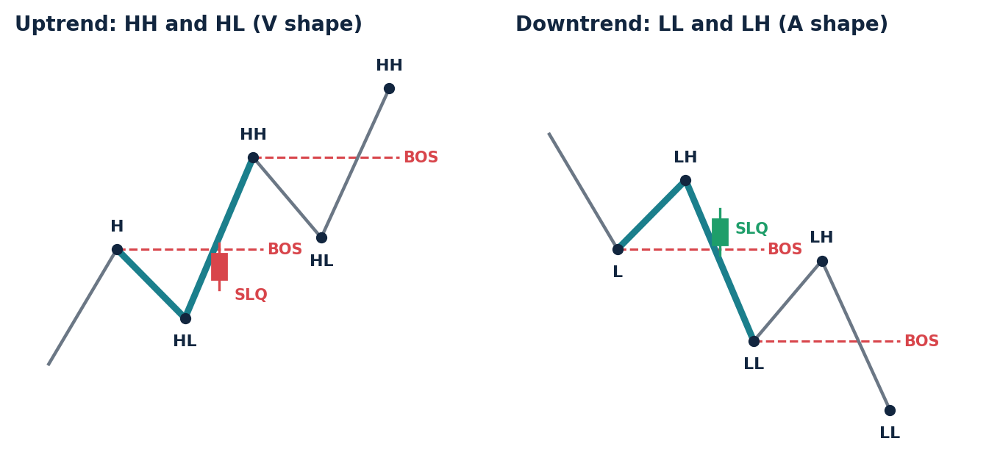
Figure 3. The V shape of an uptrend and the A shape of a downtrend (teal line). The SLQ sits on the right side of the shape, not above the previous HH and not below the previous LL. The red dashed lines mark each BOS.
OOrder FlowTimeframe: H1
Order flow looks for inducement, disruption and points of liquidity. All breaks of structure are liquidity zones. Inducement and disruption are the special ones that order flow focuses on. The H4 trend sets the direction, and these are marked on H1.
Inducement: the latest BOS in a trend.
Disruption: the BOS immediately before the inducement.
Point of liquidity: any BOS that is not the inducement or the disruption.
Marking them
Draw a horizontal line on the chart for each one. That place is marked as the point of interest (POI).
Uptrend: directly on the tip of the highest low of the BOS (the tip of the V shape).
Downtrend: on the top tip of the lower high of the BOS (above the A shape).
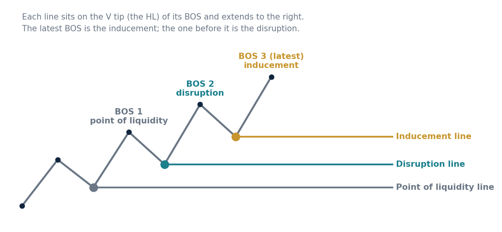
Figure 4. An uptrend with three BOS. The latest is the inducement, the one before it is the disruption, and the older one is a point of liquidity. Each line sits on the V tip of its BOS.
Order block (OB)
Uptrend: the last bearish candle before the bullish move starts.
Downtrend: the last bullish candle right before the downtrend starts.
Drawing the POI
The POI is drawn on the order block from wick to body (not wick to wick), as a horizontal box that extends beyond the right side of the chart. The box covers the order block candle only. It does not cover the other wick, and it does not extend to the candle after it.
Uptrend: from the bottom wick of the order block to the top of its body.
Downtrend: from the upper wick of the order block to the bottom of its body.
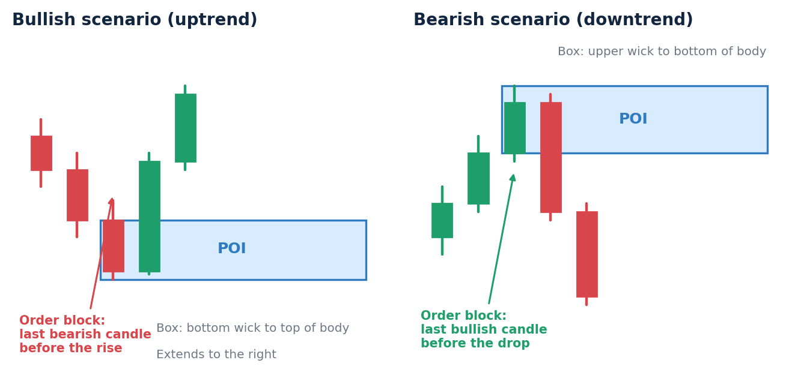
Figure 5. The order block and its POI. Bullish scenario: last bearish candle, box from its bottom wick to the top of its body. Bearish scenario: last bullish candle, box from its upper wick to the bottom of its body.
POI for inducement, disruption and points of liquidity
Every inducement, disruption or point of liquidity has an order block. Its POI is drawn the same way as the order block POI above, with one change: it is drawn from candle body to body, so the wicks are left out.
Rule: If the body of the order block candle is longer than average (judged by eye), only 50% of the body is used for the POI. Bearish scenario (downtrend): the top 50% of the body. Bullish scenario (uptrend): the bottom 50% of the body.
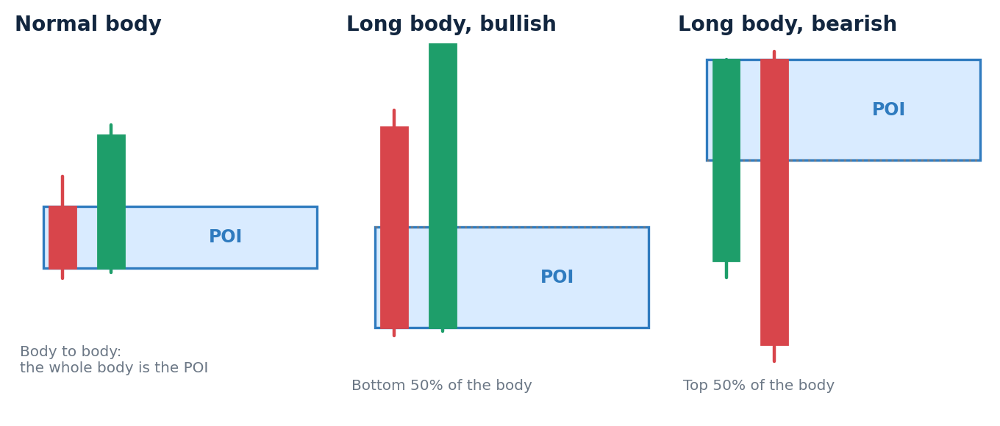
Figure 6. Body-to-body POIs. A normal body is used whole. When the body is longer than average, only 50% is used: the bottom half for a bullish scenario, the top half for a bearish one.
When inducement and disruption become invalid
Invalidation of order flow is judged on H1.
Bullish disruption: if a candle body closes below its POI, the disruption is invalidated together with its inducement. The trend has ended and changed direction, and a new inducement and disruption are mapped in the current trend.
Bearish disruption: the inverse. A candle body closing above its POI invalidates it together with its inducement.
Reclamation behavior and the disruption POI are two different things, so the H1 steps of a reclamation do not conflict with this rule.
RReclamationTimeframe: H1
POIs are drawn so they can be used for various things. One of them is waiting for a reclamation. A reclamation happens from the POI of an inducement, a disruption, or any POI of a liquidity zone, and it is detected on H1.
The five steps
Step
Bullish reclamation (uptrend)
Bearish reclamation (downtrend)
1
Price comes down into the POI.
Price goes up into the POI.
2
Price breaks below the POI with the body of a candle.
Price breaks above the POI with the body of a candle.
3
Price comes back up into the POI and breaks above it with the body of a candle.
Price comes back down into the POI and breaks below it with the body of a candle.
4
Price comes back down into the POI without breaking it with a body.
Price goes back up into the POI without breaking it with a body.
5
Price goes all the way up out of the POI, in the direction of the uptrend.
Price goes all the way down out of the POI, in the direction of the downtrend.
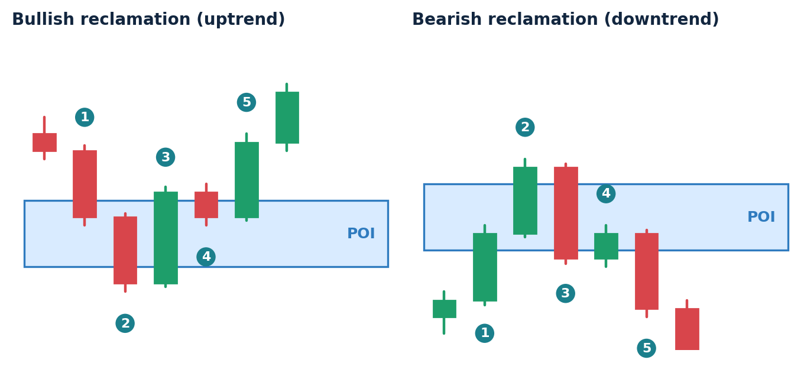
Figure 7. The numbered steps of a bullish reclamation (left) and its exact inverse, the bearish reclamation (right). That specific movement is the reclamation.
Definitions
A break: a candle body has to close beyond the far edge of the POI box (below the bottom edge for bullish, above the top edge for bearish). Wicks poking past the edge do not count.
Going all the way out: price goes past the edge of the POI box in the trend direction (past the top edge in an uptrend, past the bottom edge in a downtrend).
Direction rule: the last step of a reclamation must match the trend of its inducement or disruption.
Confirmation, not entry
Rule: A reclamation is not used as an entry, only as a confirmation. We only use key levels for entry.
Invalid reclamation: invalidation of a reclamation is judged on H1. If any of the reclamation steps is not complete, the reclamation is invalid. The market then has to go through a valid reclamation before it counts as a confirmation.
Trading without a reclamation
If you are trading from order flow without a reclamation, do not enter from the first key level. Use the second key level as the confirmation. The second key level is the one you enter from, and it does not have to form inside the inducement or disruption POI. This type of trading is not advisable, but sometimes a person just wants to trade without waiting for a reclamation.
KKey LevelFound on H1, entered on M5
A key level is two opposite candle bodies that sit right next to each other. In a resistant key level the tops of the two bodies must be at the same height, or almost the same; the bottoms can be any length. In a support key level the bottoms of the two bodies must be at the same height, or almost the same; the tops can be any length. RBS follows the same logic as the resistant key level, and SBR follows the same logic as the support key level. Key levels are found on H1 and their validity is judged on H1. The direction of the market is called market bias, so resistant, support, RBS and SBR are all directional bias key levels.
The four types
Type
How it forms
Valid when
Resistant key level (RKL)
A bullish candle first forms the key level.
It later becomes RBS.
Support key level (SKL)
A bearish candle first forms the key level.
It later becomes SBR.
Resistant becomes support (RBS)
A resistant key level that has another bullish body candle closing above its longest wick.
Valid. Look for buys.
Support becomes resistant (SBR)
A support key level that has another bearish candle body closing below its longest wick.
Valid. Look for sells.
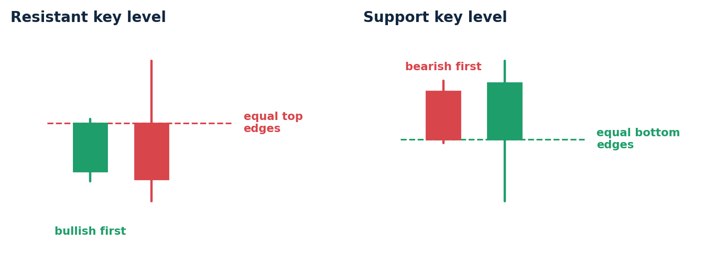
Figure 8. A resistant key level (bullish candle first, the tops of the bodies are equal, the bottoms can differ) and a support key level (bearish candle first, the bottoms of the bodies are equal, the tops can differ).
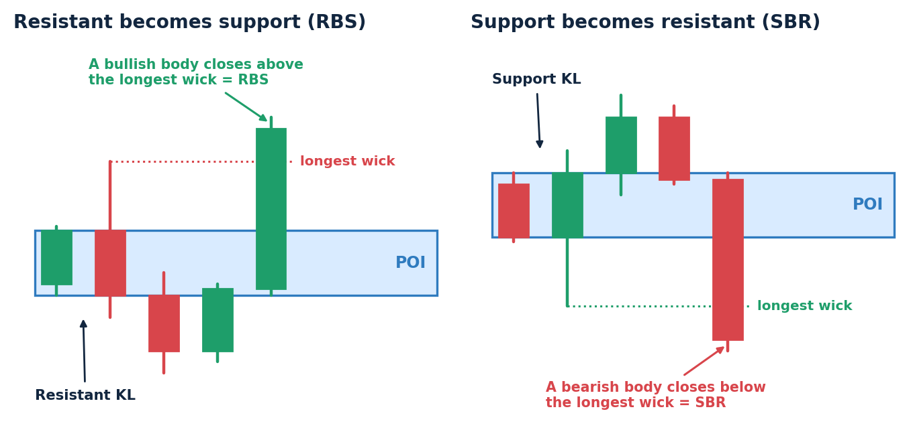
Figure 9. RBS and SBR. The dotted line is the longest wick of the key level; a body closing beyond it turns the key level into RBS or SBR. The POI box runs from the key level to that candle and then extends to the right.
What each one is used for
At a resistant key level, look for sell opportunities, at the stage before it becomes RBS.
At a support key level, look for buy opportunities, at the stage before it becomes SBR.
At RBS, look for buy trades. At SBR, look for sell trades.
Drawing the POI of a valid key level
Draw the POI box the same way as for a reclamation: from the top to the bottom of the two bodies that form the key level. The box starts at the left edge of the first (left) candle that formed the key level. For an RBS or SBR the box extends from the key level to the candle that closed to make it valid, and then extends horizontally to the right.
High and low probability setups
Rule: A low probability setup has too many wicks inside its POI, in between the key level and its BOS, and it is not traded. A high probability key level has no more than 2 wicks inside the POI in between the key level and its BOS. The wick rule applies to all types of key level POI.
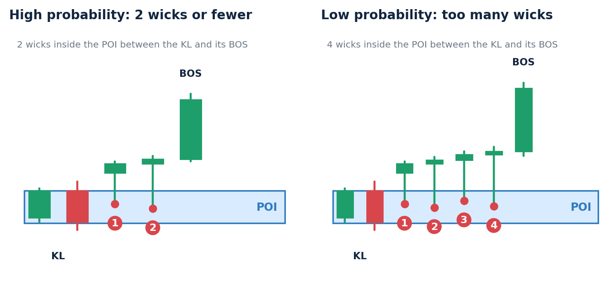
Figure 10. Counting the wicks that poke into the POI between the key level and its BOS. Two wicks is fine; four is too many.
Entering a trade
Before entering a trade, wait for price to pull back into the POI box of the key level on M5.
RBS (buy): once price has pulled back down into the POI box, enter a buy when it moves out of the POI from the top of the box.
SBR (sell): the inverse. Once price has pulled back up into the POI box, enter a sell when it moves out of the POI from the bottom of the box.
Engulf candle: an engulf candle inside the POI box can also be used as the confirmation.
Harami candle: a harami candle is also one of the entry confirmations on M5.
All confirmations must be inside the POI box on M5.
Limit order: an alternative way to enter that works together with the M5 confirmations. RBS uses a buy limit at the upper horizontal line (top edge) of the POI box. SBR uses a sell limit at the lower edge of the box.
Stop loss, take profit and closing the trade
Stop loss (SL): slightly outside the POI, in the opposite direction of the trade. For RBS slightly below the POI, for SBR slightly above it.
Take profit (TP): set using a risk reward ratio (RR). Everyone decides this for themselves; some use 1:2, 1:3, 1:4, and so on.
Close the trade when a key level fails while you are inside it, or when the trade reaches its TP or its SL.
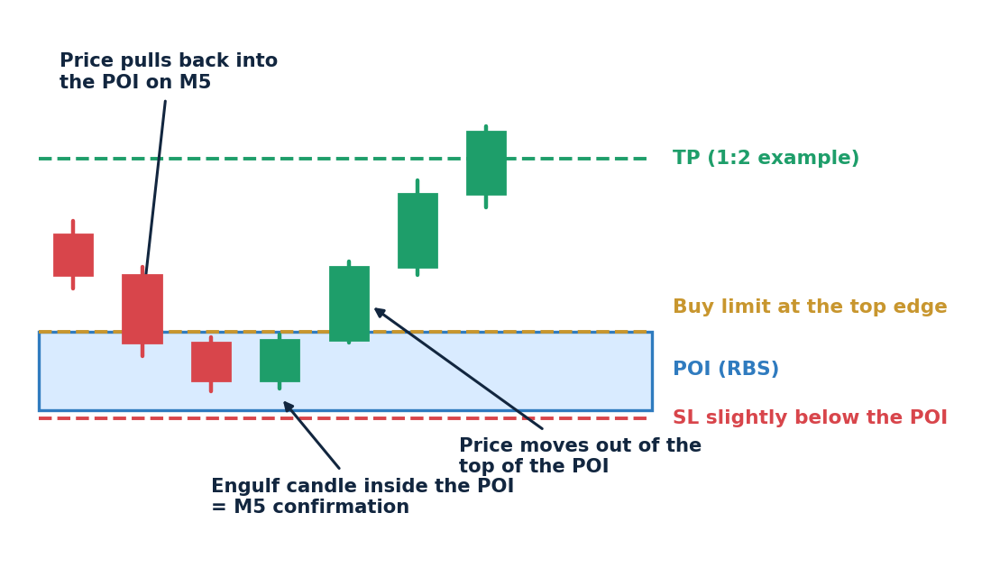
Figure 11. An RBS trade on M5: price pulls back into the POI, an engulf candle forms inside it, and price moves out of the top. The buy limit sits at the top edge, the SL slightly below the box, and the TP is set with the chosen risk reward ratio (1:2 shown).
When a key level is invalid
Rule: A candle body closing outside the POI on M5 invalidates the POI box and the key level. In practice this is price pulling back out of the POI with a body candle: below the box for RBS, above the box for SBR.
Series of key levels: key levels can form one after another. Use the most current key level. When the current key level becomes invalid because of its POI, all the other key levels become invalid as well.
QML: the inverse key level (Quasimodo Level)
QML means Quasimodo Level. It is used for market reversal: it is how to trade after a directional key level has been taken out or invalidated, in the reverse direction. It is checked for on H1; all confirmation is on H1 and the entry is on M5, just like a normal key level.
Drawing the QML POI
After an invalidated
Bottom of the new POI
Top of the new POI
Entry
Buy key level (RBS)
The top of the invalidated POI
The highest point price went to before it started coming down
Price goes up into the QML POI and then sells off in a downtrend (a sell).
Sell key level (SBR)
The lowest point price went to before it started going up
The bottom of the invalidated POI
Price goes down into the QML POI and then rallies in an uptrend (a buy).
For the SBR case the box is the exact mirror: the bottom of the invalidated POI becomes the top of the new POI.
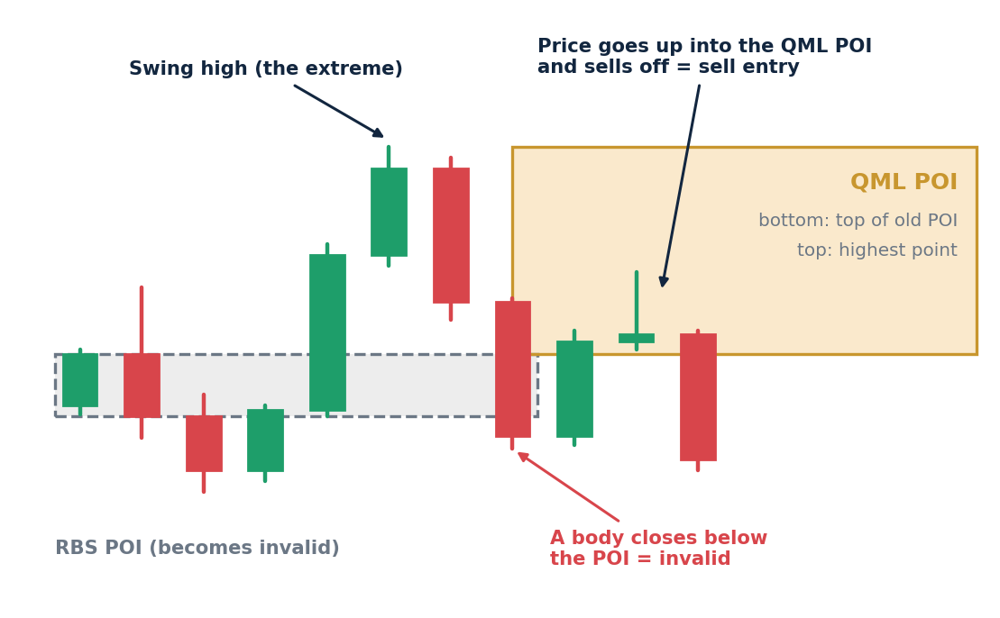
Figure 12. QML after an invalidated RBS. A body closes below the RBS POI. The top of that POI becomes the bottom of the QML POI, and the highest point (at a point of liquidity) becomes its top. Price comes up into the QML POI and sells off.
Things to watch out for
Rule: A QML must be traded where the reversal happened at a point of liquidity, or close to a point of liquidity. Points of liquidity are looked for in the last 2 months of H1 candles.
QML plus inverse: if a directional key level has failed, the QML is how to enter in the inverse direction. After that, every other key level can be traded in the inverse direction.
Stop loss and take profit stay the same as for directional key levels: the SL slightly outside the POI, the TP set with a risk reward ratio.
The wick rule applies to QML POIs too.
Advanced key level and the B-Jeff zone
Advanced key level
On the H1 key level, mark out 100% of the key level. The 100% is the full POI box, from the top to the bottom of the two bodies.
Allow the market to retrace and come back into 50% of the key level. The 50% is the middle of that box.
Take the trade on M5 by looking for candle reversal patterns (engulf, harami and others) as the entry confirmation, inside the key level POI or outside it.
For the advanced key level the confirmation can be inside or outside the POI. This differs from the standard key level, where every M5 confirmation has to be inside the POI box. The stop loss and take profit stay the same.
B-Jeff zone (bjeff zone)
On H1, mark the 100% of the key level POI, then use the fibonacci retracement to find the 50% of the POI and draw the new POI. The new 50% POI is the half that price enters second: the bottom half for RBS and the top half for SBR. Inside it there is a bjeff zone, which is an M5 key level within the 50% of an H1 key level.
Wait for price to get into the bjeff zone.
Then wait for any confirmation entry to place a trade.
Find a bjeff zone key level and trade from there if a body candle closes inside it.
All stop loss and take profit rules stay the same, and the bjeff zone is invalidated the same way as a normal key level.
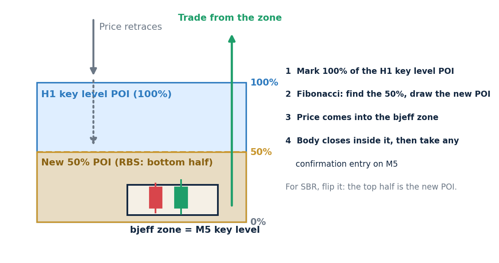
Figure 13. The bjeff zone for an RBS: the H1 key level POI (100%), the fibonacci 50% line, the new 50% POI (bottom half) and the M5 key level inside it.
Trade checklist
H4, trend: find the trend through its most valid BOS. Liquidity and a BOS must both be present, with the SLQ on the right side of the V or A.
H1, order flow: mark the inducement and disruption and draw their POIs (body to body). Check they are not invalidated by an H1 body close beyond the disruption POI.
H1, key level: find a key level and wait for it to become RBS or SBR so it is valid. Count the wicks inside its POI: no more than 2.
Draw the POI from the top to the bottom of the two bodies, and extend it to the right.
H1, check for a reclamation at the inducement or disruption POI. A valid reclamation adds confirmation. M5, wait for the pullback into the key level POI box.
M5, confirm inside the POI box: price moving out of the box, an engulf candle or a harami candle. A buy or sell limit at the box edge is the alternative entry.
Set the SL slightly outside the POI and the TP with your risk reward ratio.
Close the trade if a key level fails (a body closing outside the POI on M5), or when the TP or SL is hit.
If the directional key level fails, look for the QML at the H1 swing high or low and trade in the inverse direction.
Glossary
Term
Meaning
LQ
Liquidity: an opposite-colored candle within the trend.
BOS
Break of structure: a new HH in an uptrend or a new LL in a downtrend.
SLQ
Structural liquidity: liquidity that sits within a valid market structure.
Inducement
The latest BOS in a trend.
Disruption
The BOS immediately before the inducement.
Point of liquidity
Any BOS that is not the inducement or the disruption.
OB
Order block: the last opposite candle before the move starts.
POI
Point of interest: the box drawn on an order block, key level or QML.
Market bias
The direction of the market.
KL
Key level: two adjacent opposite candle bodies. Resistant: equal or almost equal tops. Support: equal or almost equal bottoms.
RKL / SKL
Resistant key level / support key level.
RBS / SBR
Resistant becomes support / support becomes resistant.
QML
Quasimodo Level: the inverse key level used for market reversal.
Bjeff zone
An M5 key level within the 50% of an H1 key level.
Not covered yet: The concept above is defined. Still to be set outside the concept itself: target pairs, performance targets, risk per trade and risk limits.